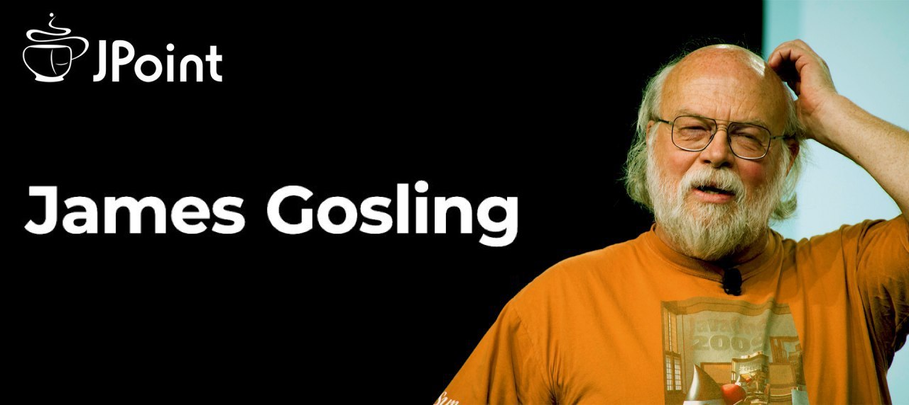
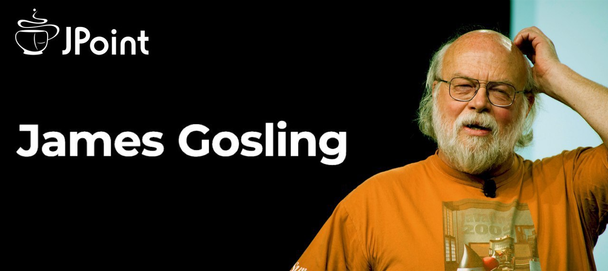
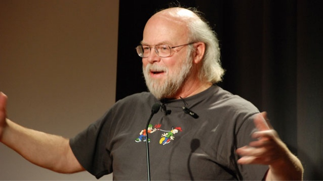
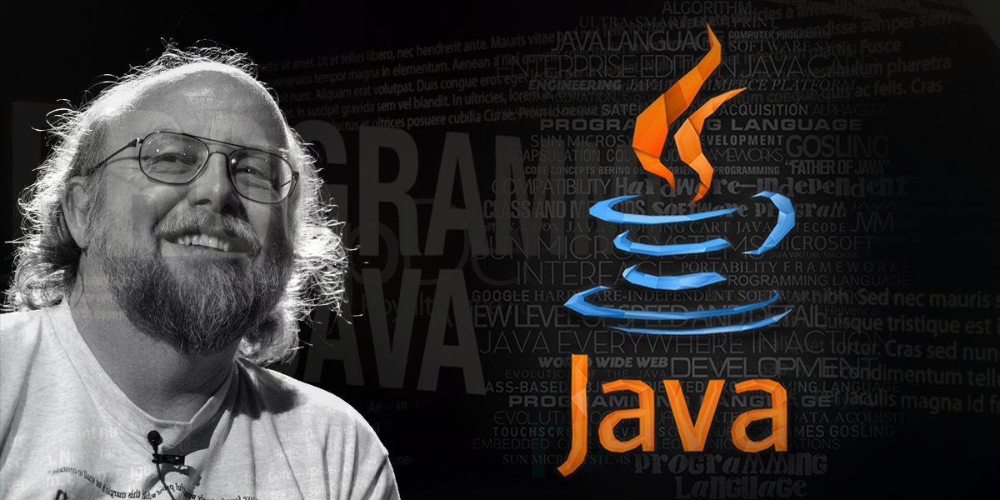

.svg)
Биография
Ранние годы и образование

Ранние годы и образование
Джеймс Артур Гослинг родился 19 мая 1955 года в Калгари, Альберта, Канада. С самого раннего возраста он проявлял интерес к науке и технологиям, что и предопределило его будущее. В детстве он увлекался математикой и инженерией, и, возможно, именно это увлечение помогло ему в дальнейшем стать одним из ведущих специалистов в области программирования.
После окончания средней школы Джеймс поступил в Университет Калгари, где изучал компьютерные науки. Его тяга к знаниям и научным исследованиям позволила ему успешно завершить учебу. Затем Гослинг продолжил обучение в Университете Карлтона в Оттаве, а в 1983 году получил степень доктора философии по компьютерным наукам в Университете Ватерлоо.
Карьера
После завершения учебы Джеймс Гослинг начал работать в компании Sun Microsystems, где он сыграл ключевую роль в создании языка программирования Java. В 1991 году, когда Java только начинала разрабатываться, Гослинг был главным архитектором проекта. Разработка этого языка изначально была задумана как решение для взаимодействия различных устройств, но позднее Java стала универсальным инструментом для веб-разработки и мобильных приложений.
Идея "Напиши один раз — запускай везде" стала девизом языка Java, и это привлекло внимание большого числа разработчиков по всему миру. С момента своего создания Java значительно повлияла на многие области, включая веб-разработку, мобильные технологии и корпоративные системы.
После того как компания Sun Microsystems была приобретена Oracle в 2010 году, Джеймс Гослинг покинул компанию и продолжил свою карьеру в других технологических стартапах и компаниях. Он также активно участвует в научной деятельности и пишет статьи по вопросам разработки программного обеспечения и вычислительных систем.
Личное время и увлечения
Помимо карьеры, Джеймс известен своей скромностью и увлечениями в области науки и техники. В свободное время он занимается исследовательской деятельностью, пишет книги, делится своим опытом на конференциях и в статьях.
Заключение
Джеймс Гослинг является ключевой фигурой в истории компьютерных наук. Его работы и идеи продолжают оказывать влияние на развитие технологий, а язык Java остается одним из самых широко используемых инструментов в мире разработки программного обеспечения.